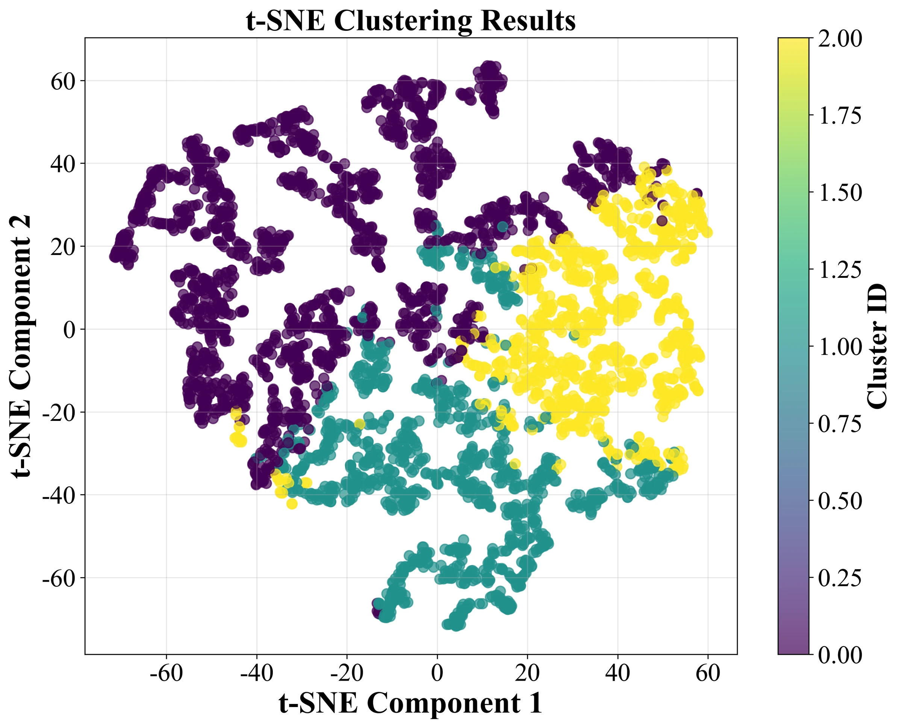
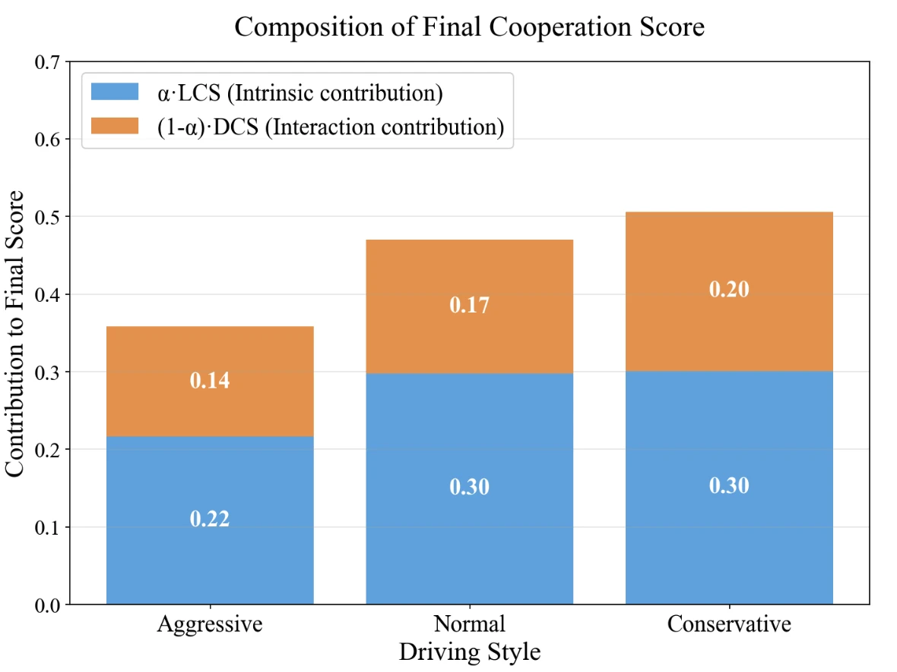
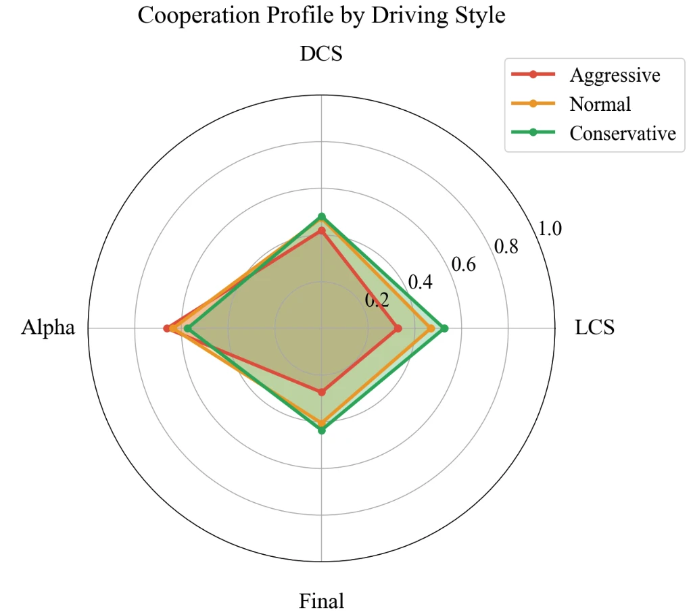
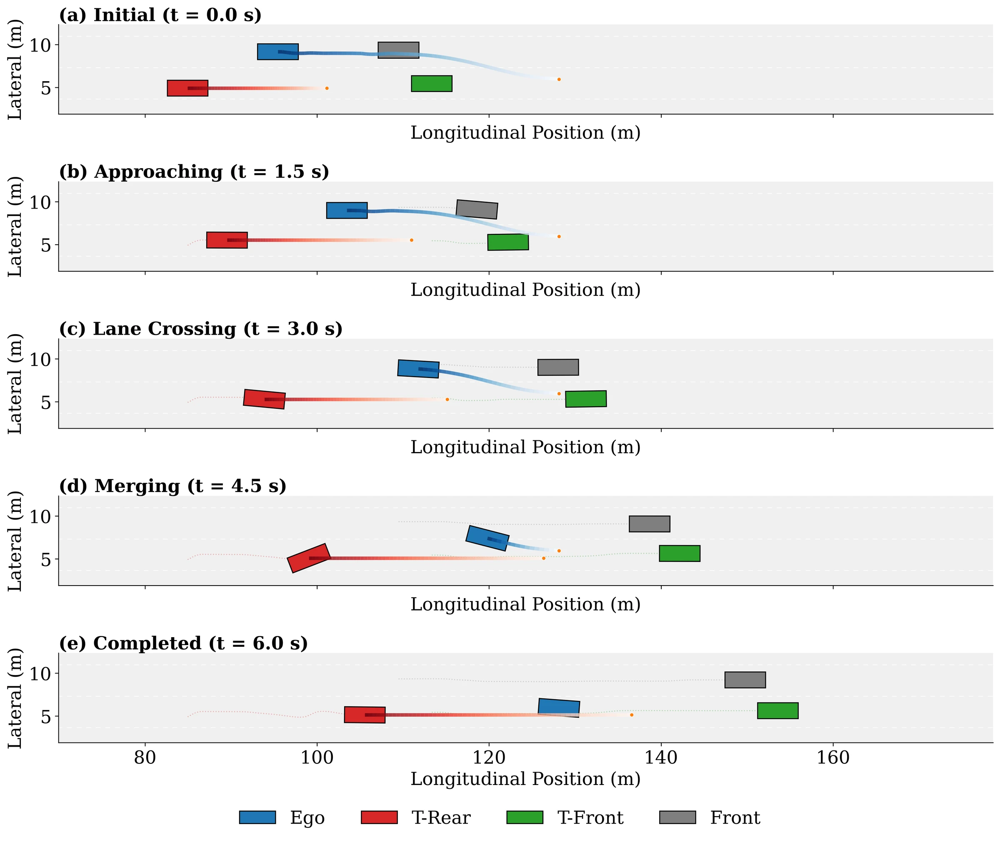
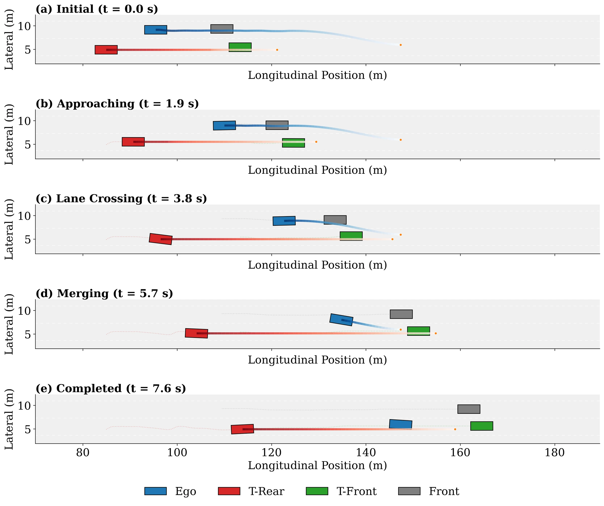

AUTONOMOUS DRIVING · IEEE T-ITS 2026
Intention-Driven Lane Change
An Intention-Driven Lane Change Framework Considering Heterogeneous Dynamic Cooperation in Mixed-Traffic Environments
- 1Intelligent Transportation Thrust, Systems Hub, The Hong Kong University of Science and Technology (Guangzhou), Guangzhou, China, and Guangdong Provincial Key Lab of Integrated Communication, Sensing and Computation for Ubiquitous Internet of Things, Guangzhou, China
- 2Robotics and Autonomous Systems Thrust, Systems Hub, The Hong Kong University of Science and Technology (Guangzhou), Guangzhou, China
- *Corresponding author
![Block diagram of the framework. Top left, driving style: human demonstrations from NGSIM I-80 are clustered with K-means into a style label. Middle, intention-prediction module: inner features (ego speed and acceleration, speeds of the front and target-rear vehicles) are concatenated with the style label and passed to the learnable cooperation score (LCS) block, giving an intrinsic score; inter features (distance, relative speed) pass through an MLP and a sigmoid, giving an interaction score; the two are mixed with weights α and 1 − α into a final cooperation score. An inset shows the LCS block: learnable weights, encoder, MLP, cooperation head, sigmoid. Left, a two-lane scenario with the ego vehicle, T-Rear, T-Front and Front vehicles, a lane-change trajectory from a start point to an end point, and the observation, decision and execution periods. Right, decision-making module: an MLP feeding a RewardNet and a PolicyNet that exchange action and reward. Bottom, motion-planning module: a driving-style-aware IRL-based predictor for the T-Rear vehicle, followed by MPC-based motion planning and control along a sigmoid path into the gap in the target lane.](assets/media/framework.webp)
OVERVIEW
A lane change depends on how the driver behind the gap will respond
In mixed traffic an autonomous vehicle changes lanes among human drivers whose intentions and driving styles differ from person to person, while existing methods often assume uniform or fixed behaviour. This framework recognises the style of the surrounding driver, turns it into a cooperation score, and uses that score both to decide whether to change lanes and to plan the manoeuvre. The decision model is trained and evaluated on recorded highway trajectories (NGSIM I-80, with highD as a second dataset), where it reaches 96.98% accuracy; the motion planner is evaluated in simulation against traffic replayed from NGSIM. The paper reports no test on a real vehicle.
-
01
Drivers are not all alike
Trajectories are clustered into three driving styles (aggressive, normal and conservative), and a small classifier recognises the style of a new trajectory in real time.
-
02
A cooperation score with two views
An intrinsic, style-dependent score and an interaction score from relative distance and speed are fused by a learned gate, so the estimate of cooperation can be read part by part.
-
03
Decide, then plan
A decision model combining behaviour cloning and inverse reinforcement learning chooses between lane change and lane keeping; an IRL predictor and model predictive control then generate the trajectory.
METHOD
From driving style to a cooperation score, a decision and a trajectory
The scenario has two adjacent lanes. The ego vehicle's decision is shaped mainly by the leading vehicle in its own lane and by the target-rear (T-Rear) vehicle in the lane it wants to enter, whose driving style is the central factor. The process has three phases: an observation period in which the T-Rear vehicle's style is inferred, a decision period in which the ego vehicle chooses lane change (LC) or lane keeping (LK), and an execution period.
-
Driving-style recognition
Six statistics of each trajectory (mean, maximum and standard deviation of velocity and of acceleration) are reduced with PCA and grouped by K-means into three styles, without manual labels. A classifier with two hidden layers of 64 units is then trained on these labels to recognise the style of new trajectories online.
-
Cooperation score
A learnable cooperation score (LCS) is computed from the inner features together with the style label, and a dynamic cooperation score (DCS) from the inter features, relative distance and relative velocity. Both lie between 0 and 1. A gate α, itself predicted by a small network, mixes them: cfinal = α·cintr + (1 − α)·cinter.
-
BC–IRL decision-making
An LSTM-based policy network is trained by behaviour cloning on the recorded LC and LK choices, with a reward network trained by inverse reinforcement learning and a regulariser that keeps the cooperation score away from the extremes of 0 and 1 added to the loss. Weighting the cloning loss by the learned reward was tried and did not help, so the two objectives are optimised in a loosely coupled way.
-
IRL–MPC motion planning
Once LC is chosen, maximum-entropy IRL, with learned weights on efficiency, safety and comfort features, predicts the T-Rear vehicle's trajectory. The ego vehicle follows a sigmoid reference path into the target lane, tracked by MPC on a bicycle model, with lane lines and surrounding vehicles entering as potential functions.
RESULTS
Recorded highway data for the decision, replayed traffic in simulation for the plan
The decision model is trained and validated on NGSIM I-80, trajectories extracted at 10 Hz from video of a California freeway: 307 lane-change episodes cut into 2 s windows give 5,295 samples (3,666 LK and 1,629 LC), split 80/20 with stratified sampling. The trained models are also evaluated on highD, recorded from drones at six highway locations at 25 Hz, without retraining. The motion planner is evaluated in simulation: the planner controls the ego vehicle while the surrounding vehicles follow their recorded NGSIM trajectories.
- Decision accuracy · NGSIM I-80
- 96.98%
- LC/LK classification on the validation split, the highest of eight methods; the Transformer baseline reaches 0.9651. Table III.
- F1 · highD, no retraining
- 0.7733
- Highest F1 and precision of seven learning-based methods; accuracy is 0.8228, second to VWC at 0.8290. Table V.
- Success rate · planning in simulation
- 86.83%
- Lane-change success with driving-style-aware prediction, against 78.12% for the IDM baseline. Table VII.
- Inference time
- 13.93 ms
- ± 0.28 ms over 100 runs at batch size 100, the lowest of the learning-based methods compared. Table IV.
Lane-change decisions on NGSIM I-80
The rule-based IDM+MOBIL baseline is the weakest at 0.6185 accuracy. Among the learning-based baselines the Transformer is closest to the proposed model and keeps the best LK recall and LC precision; the proposed model has the best overall metrics and the best LC recall and F1.
Table III of the paper: lane keeping (LK) and lane change (LC) classification on recorded NGSIM I-80 trajectories. Acc.: accuracy; P: precision; R: recall. Higher is better.
| Method | Overall | LK | LC | |||||||
|---|---|---|---|---|---|---|---|---|---|---|
| Acc. | P | R | F1 | P | R | F1 | P | R | F1 | |
| IDM+MOBIL | 0.6185 | 0.6394 | 0.6185 | 0.6269 | 0.7459 | 0.6808 | 0.7118 | 0.4000 | 0.4785 | 0.4358 |
| H-LSTM | 0.9112 | 0.9159 | 0.9112 | 0.9124 | 0.9584 | 0.9113 | 0.9343 | 0.8204 | 0.9110 | 0.8634 |
| BC | 0.8461 | 0.8502 | 0.8461 | 0.8477 | 0.9034 | 0.8728 | 0.8878 | 0.7275 | 0.7844 | 0.7549 |
| VWC | 0.9207 | 0.9219 | 0.9207 | 0.9211 | 0.9513 | 0.9332 | 0.9421 | 0.8559 | 0.8926 | 0.8739 |
| GNN | 0.9594 | 0.9597 | 0.9594 | 0.9595 | 0.9752 | 0.9659 | 0.9705 | 0.9249 | 0.9448 | 0.9347 |
| RNN | 0.9547 | 0.9554 | 0.9547 | 0.9549 | 0.9750 | 0.9591 | 0.9670 | 0.9112 | 0.9448 | 0.9277 |
| Transformer | 0.9651 | 0.9650 | 0.9651 | 0.9650 | 0.9728 | 0.9768 | 0.9748 | 0.9474 | 0.9387 | 0.9430 |
| Ours | 0.9698 | 0.9700 | 0.9698 | 0.9699 | 0.9821 | 0.9741 | 0.9781 | 0.9428 | 0.9601 | 0.9514 |
IDM+MOBIL: Intelligent Driver Model with the MOBIL lane-change rule. H-LSTM: hierarchical LSTM. BC: behaviour cloning. VWC: variable-weight cooperation model. Coloured values are the best in each column, as marked in the paper; the shaded row is the proposed model.
A second dataset, and inference time
On highD, with the learning-based models used as trained on NGSIM, accuracy lies between 0.7820 and 0.8290 across the seven methods. The proposed model has the highest precision (0.7536) and F1 (0.7733); VWC has the highest accuracy and recall (0.8290, against 0.8228 for the proposed model). Inference time, as mean ± standard deviation over 100 runs at batch size 100, is 13.93 ± 0.28 ms for the proposed model, 18.42 ± 0.36 ms for BC, 19.53 ± 0.48 ms for H-LSTM and 40.93 ± 0.70 ms for the Transformer (Tables IV and V of the paper).
Motion planning in simulation
After an LC decision the planner drives the ego vehicle while the surrounding vehicles follow their recorded NGSIM trajectories. Using the IRL-based prediction raises the success rate and shortens the manoeuvre relative to the IDM baseline; adding driving style raises the success rate further, while the lowest mean jerk belongs to the variant without it.
Table VII of the paper: lane-change motion planning in simulation with NGSIM traffic. SR: success rate. Duration and jerk are given as mean and standard deviation.
| Method | SR (%) ↑ | LC duration (s) ↓ | Jerk (m/s3) ↓ | ||
|---|---|---|---|---|---|
| Mean | Std | Mean | Std | ||
| IDM | 78.12 | 7.006 | 1.336 | 2.592 | 3.050 |
| Ours (w/o DS) | 83.75 | 6.674 | 1.453 | 2.409 | 2.726 |
| Ours (w/ DS) | 86.83 | 6.548 | 1.462 | 2.459 | 2.644 |
DS: driving style, as in the “DS-aware” predictor of Fig. 1. Coloured values are the best in each column, as marked in the paper.
Driving styles and the cooperation score
The three style clusters are mostly well separated in a t-SNE view. The final cooperation score rises from aggressive to conservative drivers, with both parts contributing more for conservative drivers. Aggressive drivers show lower LCS and DCS and a higher gate weight α on the intrinsic part; conservative drivers show the reverse, so the interaction part counts for more in their final score.



Ablation and scope
In the ablation, adding IRL to behaviour cloning raises accuracy from 0.9301 to 0.9339; adding LCS or DCS alone does not help (0.9282 and 0.9254); both together give 0.9509, against 0.9471 for the same model without driving style (Table VI of the paper).
The paper names three limits. The framework predicts the target vehicle's trajectory and cooperation intention but does not explicitly model alternative manoeuvres such as yielding, accelerating or defensive lane changes; driving style is restricted to three discrete categories; and the evaluation covers lane changes only, not car-following, merging or gap acceptance. All results come from recorded trajectory data and from simulation with replayed traffic.
CASE STUDY
One lane change, planned with two predictions of the car behind
Snapshots of one representative scenario from the paper. The blue ego vehicle is simulated under the MPC planner; the other three vehicles follow trajectories extracted from NGSIM I-80. The blue line is the MPC trajectory and the red line the predicted trajectory of the T-Rear vehicle.


CITATION
@article{qiu2026intention,
title={An Intention-Driven Lane Change Framework Considering Heterogeneous
Dynamic Cooperation in Mixed-Traffic Environments},
author={Xiaoyun Qiu and Haichao Liu and Yue Pan and Jun Ma and Xinhu Zheng},
journal={IEEE Transactions on Intelligent Transportation Systems},
year={2026},
doi={10.1109/TITS.2026.3690192},
eprint={2509.22550},
archivePrefix={arXiv},
}